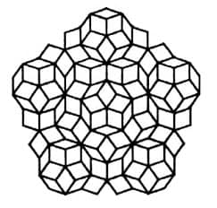

Quasicrystals (En). Квазикристаллы (Ru).
Yuqori simmetriyali va uzoq tartibga ega bo'lgan, kristalli panjaraga ega bo'lmagan qattiq jismlar (odatda metall qotishmalari). Kvazikristallar simmetriyaning 5-, 8-, 10-, 12- va boshqa tartibli nokristallografik o'qlari bilan yuqori darajadagi tartiblanishga ega bo'ladi, lekin uch o'lchovli davriyligi yo'q. 5-chi tartibli o'qga ega bo'lgan kvazikristalslarda atomlarining tartiblanishining ikki o'lchovli geometrik modeli sifatida, 36o va 72o o'tkir burchakli romblarning ikki turlaridan tashkil topgan Penrouza mozaikasi olinishi mumkin (R. Penrose, 1979) (14-rasm). Kvazikristallar olti o'lchamli panjaralarning uch o'lchovli proeksiyalari bilan tavsiflangan yuqori simmetrik nomutanosib strukturalar sifatida qaralishi mumkin. Kvazikristallarni ilk bor D.Shehtman va boshqalar tomonidan (1984) Al-Mn tizimida eritmalarning o'ta tez sovutilish bilan olingan.

14-rasm. Penrouza cheksiz ikki o'lchamli to'rining fragmenti.